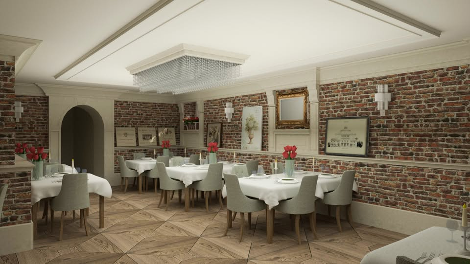

🐟
Ryby z własnych stawów
Sandacz, sum i karp prosto z Gospodarstwa Rybackiego Wójcza. Świeżość, której nie da się podrobić.
Solec-Zdrój · Willa „Prus”
Kuchnia sezonowa, ryby z własnych stawów i chleb na zakwasie wypiekany każdego dnia na miejscu.
Kilka słów o nas
Chleb i Wino to kameralna restauracja ukryta w podziemiach Willi „Prus” w uzdrowiskowym Solcu-Zdroju. Ceglane sklepienia, białe obrusy i światło świec tworzą przestrzeń, w której chce się zostać dłużej niż na jedno danie.
Kuchnia opiera się na tym, co lokalne i sezonowe. Ryby pochodzą z naszego własnego Gospodarstwa Rybackiego Wójcza — sandacz, sum i karp trafiają na talerz świeże, a nie z mrożonki. Warzywa bierzemy z własnego gospodarstwa, sery ze Strzałkowa, a piwa z regionalnych browarów Ponidzia.
Chleb na zakwasie wypiekamy na miejscu każdego dnia. To nasza wizytówka — i można go kupić na wynos.

Dlaczego warto
Sandacz, sum i karp prosto z Gospodarstwa Rybackiego Wójcza. Świeżość, której nie da się podrobić.
Wypiekany na miejscu każdego dnia, podawany ze smakowymi masełkami. Cały bochenek zabierzesz do domu.
Wina regionalne, gruzińskie, hiszpańskie i chilijskie oraz kraftowe piwa z browarów Ponidzia.
Z karty
kimchi / puree z marchewki / won ton z warzywami / młoda marchew / chipsy z marchewki
cukinia w pomidorach San Marzano / chipsy ziemniaczane / krewetka / prażynka / sos maślany z kolorowym pieprzem
sos pieprzowy / seler / boczniaki / ziemniak truflowy / frytki z batata
jabłka / cynamon / maślana kruszonka / lody waniliowe / mleczna czekolada
Ceny orientacyjne, mogą ulec zmianie — obowiązuje karta dostępna w restauracji.
Opinie gości
★★★★★„Jedzenie znakomite, obsługa przesympatyczna. Ryby z własnych stawów, warzywa z własnego gospodarstwa. Polecam.”
Gość Google
★★★★★„Najlepszy sandacz… niebo w gębie. Dania szybko przygotowane i naprawdę spore porcje. Wszystko świeże i ładnie podane.”
Gość Google
★★★★★„Świetne miejsce z wyjątkowym klimatem. Dania przygotowane z dbałością o szczegóły, a własne pieczywo to prawdziwa wizytówka restauracji.”
Gość Google
Rezerwacja stolika
Najprościej i najszybciej — dzwoniąc. Chętnie doradzimy w wyborze dań i dopasujemy menu do potrzeb (dieta bezglutenowa, wegetariańska, przyjęcia okolicznościowe).
41 357 68 57